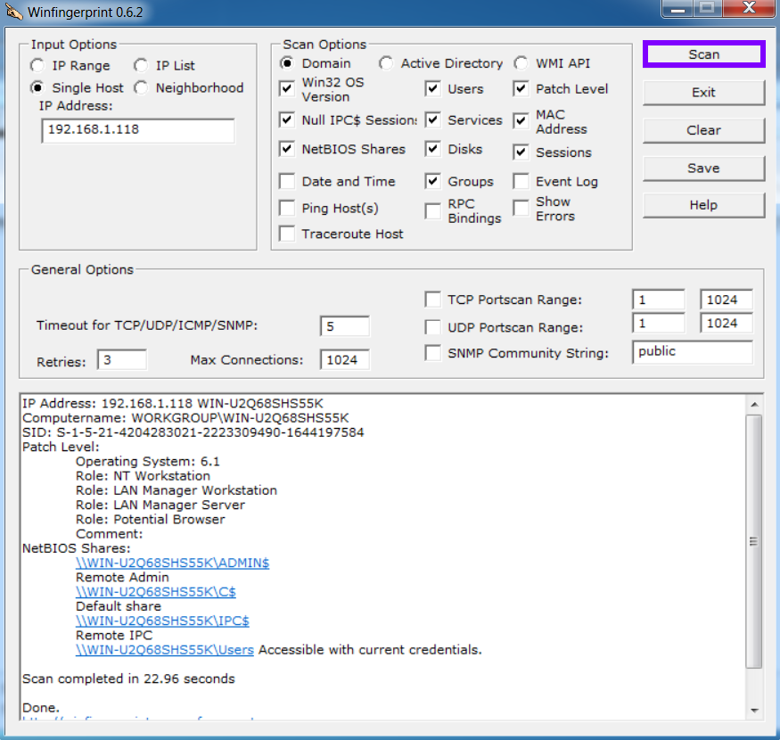

winfingerprint
site download(2005):
https://packetstormsecurity.com/files/38356/winfingerprint-0.6.2.zip.htmlWinfigerprint
is an administrative network resource scanner that allows us to scan machines in our LAN in order to gather details
about each host. This includes NetBIOS shares, disk information, services, users, groups, and more...
